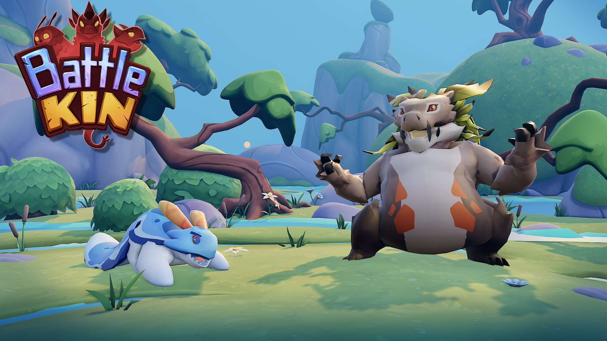

Battle Kin - Mid-level Programmer
A pet collector and battler built for Meta's Horizon Worlds. I was hired as one of the first programmers on the project and helped develop the game from initial construction to the eventual 1.0 release. Most of these features are either very non-visual or were cut from the final game, so excuse my rough sketches as an attempt to explain the work I achieved!
Features
Throughout the two years of work on the project I implemented several core features to the game, though due to the nature of the project feature requirements changed often meaning already implemented features often were cut from the game.
Dynamic Camera
Back when the game was aiming to be a top-down real-time action game, I was tasked with implementing the camera for the creature combats. Since the game was targetted at a casual mobile audience we wanted the camera to automatically move to keep the action in frame and give the player one less control to worry about.

To achieve this, we find the two combatants in the arena which are furthest apart - here p1 and p3 - and place the camera object (point C) directly in between. Then to figure out the boom arm length, we can use the FOV of the camera (θ) and the distance between the two combatants plus a small margin (k) and apply some basic trig.
The rotation of the camera object is then found by finding the angle between the vector p1p3 and the x axis using trig. However, we always want the camera to be closer to the side of the player pet (p0) for visibility, so using a rotated coordinate system such that the vector p1p3 is now the new x axis, we can find out whether p0 has a negative z component and add or minus π/2 to the camera rotation accordingly
Overall this was a fairly simple test of trigonometry, but still quite a fun system to implement. Finally adding some lerp to the camera rotation using a quadratic curve helps keep things smooth and satisfying.